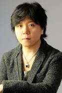

One Piece Anime
Toei Animation produces an anime television series based on the One Piece manga. The series, which premiered in Japan on Fuji Television on October 20, 1999, has aired more than 800 episodes, and has been exported to various countries around the world.[62] Two cross-over episodes with the anime adaptation of Toriko were aired. The first of these, which was also the first episode of Toriko, aired on April 3, 2011.[63] A second special, which also crossed over with Dragon Ball Z, aired on April 7, 2013.
The studio was founded by animators Kenzō Masaoka and Zenjirō Yamamoto in 1948 as Japan Animated Films (日本動画映画 Nihon Dōga Eiga, often shortened to 日動映画 (Nichidō Eiga)). In 1956, Toei purchased the studio and it was renamed Toei Doga Co., Ltd. (東映動画株式会社 Tōei Dōga Kabushiki-gaisha, "dōga" is Japanese for "animation"), doing business as Toei Animation Co., Ltd. outside Japan. In 1998, the Japanese name was renamed to Toei Animation. It has created a number of TV series and movies and adapted Japanese comics as animated series, many popular worldwide. Hayao Miyazaki, Isao Takahata, Leiji Matsumoto and Yoichi Kotabe have worked with the company. Toei is a shareholder in the Japanese anime satellite television network Animax with other anime studios and production companies, such as Sunrise, TMS Entertainment and Nihon Ad Systems Inc.The company is headquartered in the Ohizumi Studio in Nerima, Tokyo.
| Voice Actor | character | Voice Actor | character |
 JUNKO TAKEUCHI |
Naruto |  HOCHU OTSUKA |
jiraiya |
|  NORIAKI SUGIYAMA |
Sasuke |  KUJIRA |
Oritchimaru |
 CHIE NAKAMURA |
Sakura | MASAKO KATSUKI |
Tsunade |